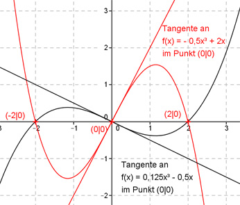

Aufgabe 26 Wie lautet die Funktionsgleichung des Graphen einer ganzrationalen Funktion 3. Grades, der die x-Achse an den selben Stellen wie der Graph von f(x) = 2x - 0,5x³ schneidet und wenn beide Graphen im Nullpunkt senkrecht aufeinanderstehen?  Für Schnittpunkte mit der x-Achse (Nullstellen) gilt f(x) = 0. 2x - 0,5x3 = 0 x * (2 - 0,5x2) = 0 Das Produkt aus 2 Faktoren ist dann = 0, wenn einer der beiden Faktoren 0 ist. Faktor x ist dann gleich 0, wenn x1 = 0 ist. 2 - 0,5x2 ist dann = 0, wenn 2 - 0,5x2 = 0 |+0,5x² 2 = 0,5x2 |:0,5 x2 = 4 |√ x2,3 = ± 2 x2 = 2 x3 = -2 Die Schnittpunkte mit der x-Achse liegen bei: (-2|0), (2|0) und (0|0). Beide Graphen stehen im Nullpunkt senkrecht aufeinander bedeutet, dass die beiden Tangenten an die Graphen senkrecht aufeinander stehen. Für senkrecht aufeinander stehende Geraden (Tangenten) gilt: m1 * m2 = -1 Die Steigung einer Tangente entspricht der ersten Ableitung an diesem Punkt: f(x) = 2x - 0,5x3 f’(x) = 2 - 1,5x2 f’(0) = 2 - 1,5 * 02 f’(0) = 2 = m1 2 * m2 = -1 | :2 m2 = - 0,5 Allgemeine Form einer ganzrationalen Funktion 3. Grades: f(x) = ax3 + bx2 + cx + d f’(x) = 3ax2 + 2bx + c f’’(x) = 6ax + 2b 4 Bedingungen: 1. Ein Schnittpunkt mit der x-Achse liegt bei (0|0) bedeutet: f(0) = 0 --> a * 03 + b * 02 + c * 0 + d = 0 --> d = 0 2. Ein Schnittpunkt mit der x-Achse liegt bei (2|0) bedeutet: (d = 0 eingesetzt): f(2) = 0 --> a * 23 + b * 22 + c * 2 = 0 --> 8a + 4b + 2c = 0 I 3. Ein Schnittpunkt mit der x-Achse liegt bei (-2|0) bedeutet: (d = 0 eingesetzt): f(-2) = 0 --> a * (-2)3 + b * (-2)2 + c * (-2) = 0 --> -8a + 4b - 2c = 0 II 4. Die Steigung der Tangente m2 = -0,5 in (0|0) an die gesuchte Funktion bedeutet: f’(0) = -0,5 --> 3a * 02 + 2b * 0 + c = -0,5 --> c = -0,5 I + II 8a + 4b + 2c = 0 -8a + 4b - 2c = 0 ------------------ 8b = 0 |:8 b = 0 b = 0 und c= -0,5 und d = 0 in I eingesetzt: 8a - 1 = 0 |+1 8a = 1 |:8 a = 0,125 Gesuchte Funktionsgleichung: f(x) = 0,125x3 - 0,5x